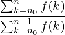
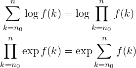

| Up | Next | Prev | PrevTail | Tail |
This package implements the Gosper algorithm for the summation of series. It defines operators SUM and PROD. The operator SUM returns the indefinite or definite summation of a given expression, and PROD returns the product of the given expression.
This package loads automatically.
This package implements the Gosper algorithm for the summation of series. It defines operators sum and prod. The operator sum returns the indefinite or definite summation of a given expression, and the operator prod returns the product of the given expression. These are used with the syntax:
| sum(⟨expr:expression⟩,⟨k:kernel⟩[,⟨lolim:expression⟩[,⟨uplim:expression⟩]]) | ||
| prod(⟨expr:expression⟩,⟨k:kernel⟩[,⟨lolim:expression⟩[,⟨uplim:expression⟩]]) | ||
If there is no closed form solution, these operators return the input unchanged. ⟨lolim⟩ and ⟨uplim⟩ are optional parameters specifying the lower limit and upper limit of the summation (or product), respectively. If ⟨uplim⟩ is not supplied, the upper limit is taken as ⟨k⟩ (the summation variable itself).
For example:
Gosper’s algorithm succeeds whenever the ratio
|
 |
is a rational function of n. The function sum!-sq handles basic functions such as polynomials, rational functions and exponentials.
The trigonometric functions sin, cos, etc. are converted to exponentials and then Gosper’s algorithm is applied. The result is converted back into sin, cos, sinh and cosh.
Summations of logarithms or products of exponentials are treated by the formula:

There is a switch trsum (default off). If this switch is on, trace messages are printed out during the course of Gosper’s algorithm.
| Up | Next | Prev | PrevTail | Front |